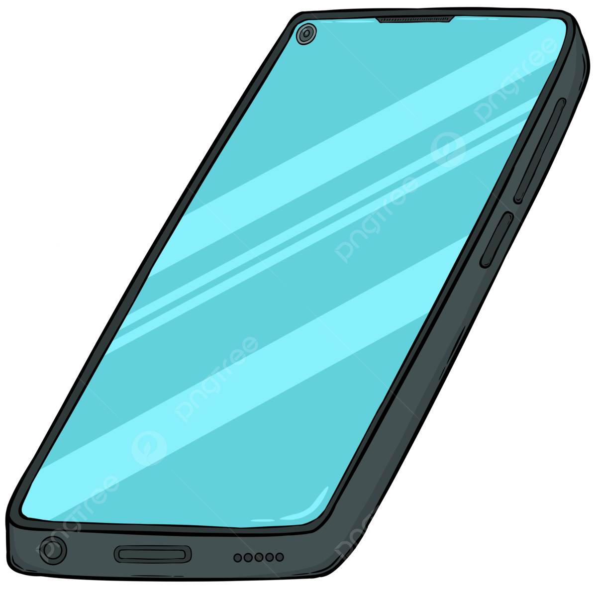

<nav class="navbar"> 
  <!-- Logo -->
  <div class="logo">
    
  </div>
  <span>Movilpedia</span>

  <!-- Botón para la vista de Inicio -->
  <button id="menuInicio" mat-button routerLink="/inicio">Inicio</button>

  <span class="example-spacer"></span>

  <!-- Buscador -->
  <div class="search-container">
    <input type="text" placeholder="Buscar..." aria-label="Buscar" />
    <button mat-icon-button aria-label="Buscar">
      <mat-icon>search</mat-icon>
    </button>
  </div>

  <!-- Carrito -->
  <button mat-icon-button class="example-icon favorite-icon" aria-label="Example icon-button with heart icon">
    <mat-icon>shopping_cart</mat-icon>
  </button>

  <!-- Label Para Modo Oscuro -->
  <label for="toggle" id="label_toggle"><i class="fa-solid fa-moon"></i></label>
  <input type="checkbox" id="toggle" (click)="cambiarFondo()">
</nav>